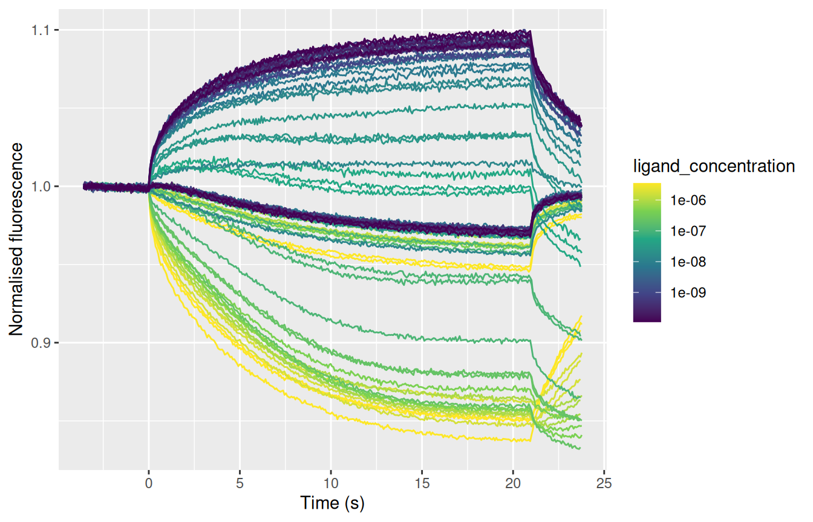
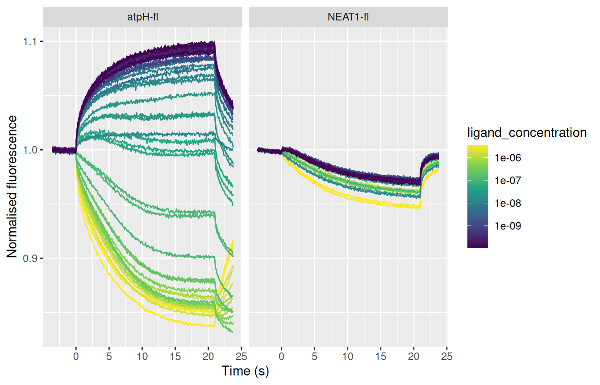
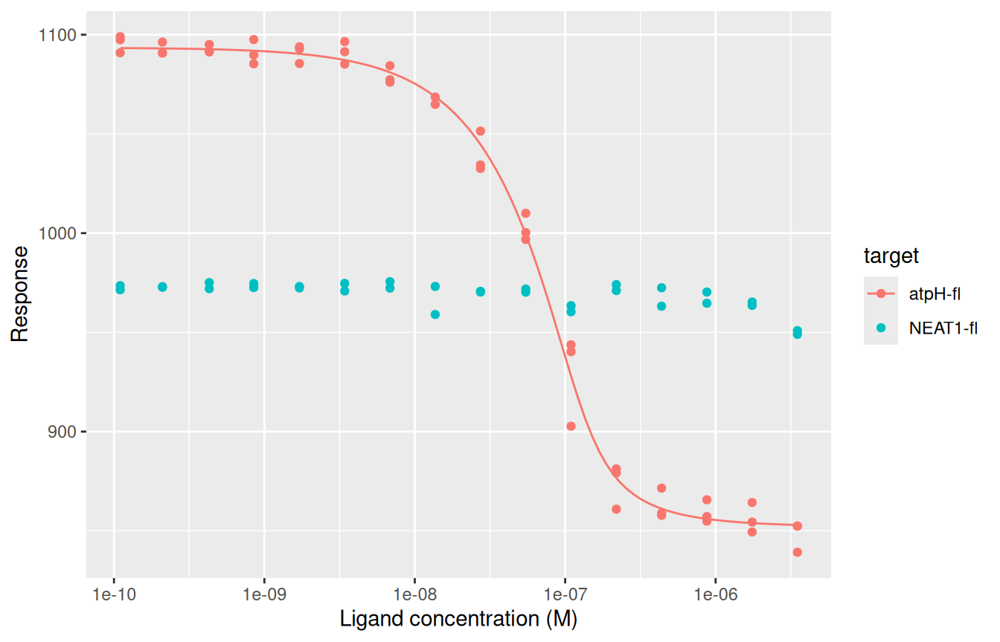
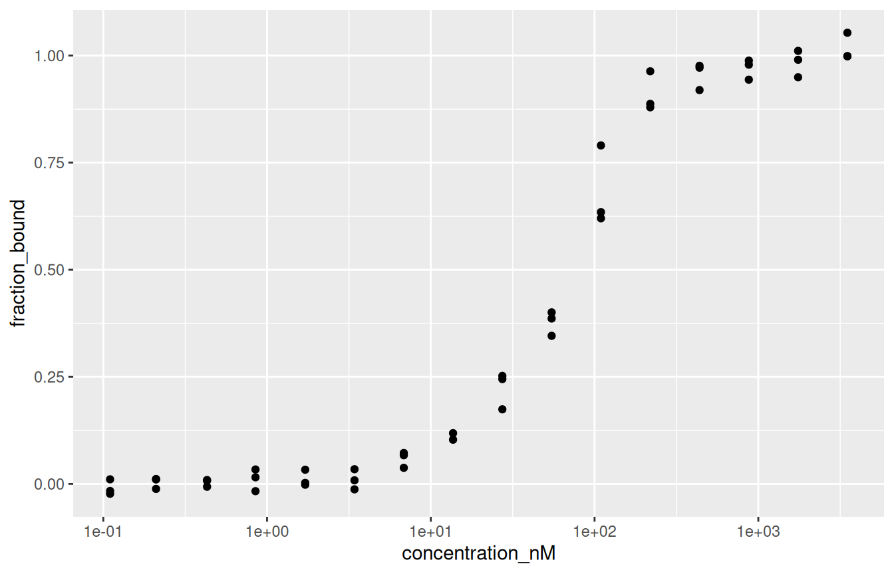
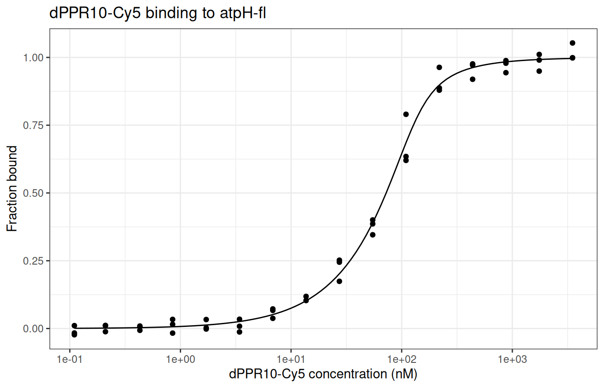
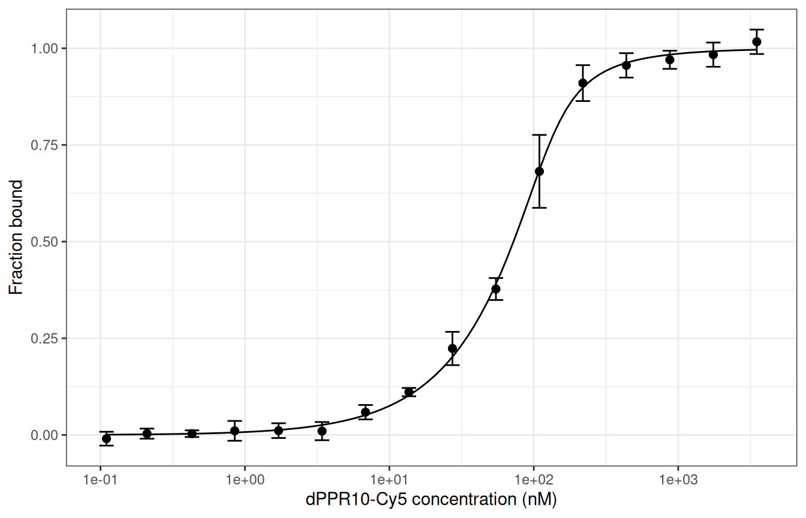

install.packages("pak")
pak::pak("BradyAJohnston/tidymst")tidymst reads the Excel files that NanoTemper’s MO.Affinity Analysis software exports from microscale thermophoresis (MST) experiments, and turns them into ordinary R data frames. From there you can recalculate Fnorm, fit binding curves to get a Kd, and make your own plots.
This guide walks through a whole analysis. It assumes you have used R a little, for example to make a basic plot, but not much more.
Setup
Install tidymst from GitHub (you only need to do this once):
Then load it at the start of every script, along with dplyr (for working with data frames) and ggplot2 (for plotting):
Exporting your data from MO.Affinity Analysis
tidymst reads the .xlsx files that MO.Affinity Analysis writes when you export data. Which export you need depends on what you want to do:
| To get | Export from | Read with |
|---|---|---|
| The MST trace of every capillary | MST Traces | read_mst_traces() |
| The Fnorm of every capillary | Dose-Response (Flat) | read_mst_dose_response() |
| Mean responses, and MO.Affinity’s fit | Compare Results (Chart) |
read_mst_dose_response(), read_mst_fit()
|
| A table of MO.Affinity’s fits | Compare Results (Grid) | read_mst_fit() |
| The capillary scans | Capillary Scan | read_mst_capillary_scan() |
If you’re not sure what a file is, read_mst() works it out for you and picks the right reader.
The MST Traces export is the most useful: it has the raw data and records which capillaries you marked as outliers, so you can redo the whole analysis in R.
Reading data
tidymst comes with some example files, from an experiment measuring the binding of a protein (dPPR10-Cy5) to two RNAs (atpH-fl and NEAT1-fl). tidymst_example() gives the path to one of them:
path <- tidymst_example("dppr10-cy5_traces.xlsx")With your own data, path is just the location of your file, in quotes:
path <- "C:/Users/me/Documents/MST/2024-05-01_traces.xlsx"Read the traces with read_mst_traces():
traces <- read_mst_traces(path)
traces
#> # A tibble: 29,415 × 16
#> merge_set run capillary measured_at capillary_type ligand
#> <chr> <chr> <int> <dttm> <chr> <chr>
#> 1 dPPR10-Cy5 Tray Run atpH… 1 2018-11-21 09:42:32 Unspecified c… dPPR1…
#> 2 dPPR10-Cy5 Tray Run atpH… 1 2018-11-21 09:42:32 Unspecified c… dPPR1…
#> 3 dPPR10-Cy5 Tray Run atpH… 1 2018-11-21 09:42:32 Unspecified c… dPPR1…
#> 4 dPPR10-Cy5 Tray Run atpH… 1 2018-11-21 09:42:32 Unspecified c… dPPR1…
#> 5 dPPR10-Cy5 Tray Run atpH… 1 2018-11-21 09:42:32 Unspecified c… dPPR1…
#> 6 dPPR10-Cy5 Tray Run atpH… 1 2018-11-21 09:42:32 Unspecified c… dPPR1…
#> 7 dPPR10-Cy5 Tray Run atpH… 1 2018-11-21 09:42:32 Unspecified c… dPPR1…
#> 8 dPPR10-Cy5 Tray Run atpH… 1 2018-11-21 09:42:32 Unspecified c… dPPR1…
#> 9 dPPR10-Cy5 Tray Run atpH… 1 2018-11-21 09:42:32 Unspecified c… dPPR1…
#> 10 dPPR10-Cy5 Tray Run atpH… 1 2018-11-21 09:42:32 Unspecified c… dPPR1…
#> # ℹ 29,405 more rows
#> # ℹ 10 more variables: ligand_concentration <dbl>, target <chr>,
#> # target_concentration <dbl>, mst_power <chr>, excitation_power <dbl>,
#> # excitation_type <chr>, thermostat_setpoint <chr>, included <lgl>,
#> # time <dbl>, fluorescence <dbl>The result is a tibble, a kind of data frame. Each row is one time point from one capillary, and each column is one variable. The columns are the same whichever file you read:
-
merge_set,runandcapillarysay where the measurement came from. -
target,target_concentration,ligandandligand_concentrationdescribe the sample. Concentrations are always in molar (M), so 50 nM is5e-08. -
includedisFALSEfor capillaries you marked as outliers. -
time(in seconds) andfluorescenceare the trace itself.
To see the whole table in RStudio or Positron, use View(traces). To pull out one column, use $:
unique(traces$target)
#> [1] "atpH-fl" "NEAT1-fl"Looking at the traces
mst_plot_traces() draws every trace, coloured by ligand concentration:
mst_plot_traces(traces)
The traces for the two RNAs are drawn on top of each other. To split them into separate panels, add facet_wrap() with +, as with any ggplot:
mst_plot_traces(traces) +
facet_wrap(~target)
Calculating Fnorm
Fnorm compares the fluorescence after the IR laser switches on (the “hot” window) to before it (the “cold” window). It’s given in per mille (‰), so 1000 means no change.
MO.Affinity Analysis records the windows it used, which you can see with read_mst_metadata():
read_mst_metadata(path) |>
select(cold_start, cold_end, hot_start, hot_end)
#> # A tibble: 1 × 4
#> cold_start cold_end hot_start hot_end
#> <dbl> <dbl> <dbl> <dbl>
#> 1 -1 0 19 20The |> symbol is called the pipe. It passes the result on the left into the function on the right, so you can read the code as “read the metadata, then select these columns”.
mst_fnorm() calculates Fnorm for each capillary. First, use filter() to keep only the capillaries that weren’t marked as outliers:
fnorm <- traces |>
filter(included) |>
mst_fnorm(hot = c(19, 20), cold = c(-1, 0))
fnorm
#> # A tibble: 79 × 16
#> merge_set run capillary measured_at capillary_type ligand
#> <chr> <chr> <int> <dttm> <chr> <chr>
#> 1 dPPR10-Cy5 Tray Run atpH… 1 2018-11-21 09:42:32 Unspecified c… dPPR1…
#> 2 dPPR10-Cy5 Tray Run atpH… 2 2018-11-21 09:43:14 Unspecified c… dPPR1…
#> 3 dPPR10-Cy5 Tray Run atpH… 3 2018-11-21 09:43:57 Unspecified c… dPPR1…
#> 4 dPPR10-Cy5 Tray Run atpH… 4 2018-11-21 09:44:39 Unspecified c… dPPR1…
#> 5 dPPR10-Cy5 Tray Run atpH… 5 2018-11-21 09:45:22 Unspecified c… dPPR1…
#> 6 dPPR10-Cy5 Tray Run atpH… 6 2018-11-21 09:46:05 Unspecified c… dPPR1…
#> 7 dPPR10-Cy5 Tray Run atpH… 7 2018-11-21 09:46:47 Unspecified c… dPPR1…
#> 8 dPPR10-Cy5 Tray Run atpH… 8 2018-11-21 09:47:30 Unspecified c… dPPR1…
#> 9 dPPR10-Cy5 Tray Run atpH… 9 2018-11-21 09:48:13 Unspecified c… dPPR1…
#> 10 dPPR10-Cy5 Tray Run atpH… 10 2018-11-21 09:48:55 Unspecified c… dPPR1…
#> # ℹ 69 more rows
#> # ℹ 10 more variables: ligand_concentration <dbl>, target <chr>,
#> # target_concentration <dbl>, mst_power <chr>, excitation_power <dbl>,
#> # excitation_type <chr>, thermostat_setpoint <chr>, included <lgl>,
#> # response_type <chr>, response <dbl>Now there is one row per capillary, and the Fnorm is in the response column. These values match those MO.Affinity Analysis calculates for the same windows, but here you are free to try others, such as hot = c(1.5, 2.5).
Fitting a binding curve
mst_fit() fits a binding model to the Fnorm values. Use .by to fit each RNA separately:
fits <- mst_fit(fnorm, model = "kd", .by = target)
#> Warning: Failed to fit 1 of 2 groups.
fits
#> # A tibble: 2 × 5
#> target model n sigma fit
#> <chr> <chr> <int> <dbl> <list>
#> 1 atpH-fl kd 47 0.0755 <mst_bnd_>
#> 2 NEAT1-fl kd NA NA <NULL>There’s one row per RNA. n is the number of capillaries fitted and sigma is the scatter of the points around the curve. The warning tells us that one fit failed: NEAT1-fl’s fit is empty (NULL). As we’ll see in the plot below, NEAT1-fl’s Fnorm barely changes with concentration, so there is no binding curve to fit. A failed fit is never an error, so one bad group won’t stop the others being fitted.
There are two models:
-
model = "kd"(the default) fits the standard 1:1 binding model, taking into account the concentration of the fluorescent target. -
model = "hill"fits the Hill equation, giving an EC50 and Hill coefficient, for cooperative binding.
By default, the Kd model estimates the target concentration too. If you know it, setting it gives a more reliable Kd, for example mst_fit(fnorm, target_concentration = 50e-9, .by = target).
The fit column holds the fitted models. Get the fitted values with mst_coefs():
coefs <- mst_coefs(fits)
coefs
#> # A tibble: 4 × 7
#> target model term estimate std_error conf_low conf_high
#> <chr> <chr> <chr> <dbl> <dbl> <dbl> <dbl>
#> 1 atpH-fl kd unbound 1.09e+3 1.74 1.09e+3 1.10e+3
#> 2 atpH-fl kd bound 8.52e+2 2.80 8.46e+2 8.58e+2
#> 3 atpH-fl kd kd 1.26e-8 0.00000000367 6.99e-9 2.27e-8
#> 4 atpH-fl kd target_concentration 1.20e-7 0.00000000951 1.02e-7 1.40e-7Each row is one parameter (term) of one fit, with its estimate, standard error and 95% confidence interval. To get just the Kds, in nM:
atpH-fl binds with a Kd of around 13 nM, matching the value MO.Affinity Analysis gives for the same data. Always plot your data to check a fit!
Plotting dose-response curves
mst_plot_dose_response() plots the data, with the fitted curves if you give it fits:
mst_plot_dose_response(fnorm, fits, colour = target)
Comparing curves with fraction bound
Different targets often have different baselines, which makes them hard to compare. mst_normalise() adds two columns using the fits:
-
delta_fnorm: Fnorm relative to the unbound state, so every curve starts at 0. -
fraction_bound: the fraction of target bound, from 0 (unbound) to 1 (fully bound).
normalised <- mst_normalise(fnorm, fits)
normalised |>
select(target, ligand_concentration, response, delta_fnorm, fraction_bound)
#> # A tibble: 79 × 5
#> target ligand_concentration response delta_fnorm fraction_bound
#> <chr> <dbl> <dbl> <dbl> <dbl>
#> 1 atpH-fl 0.0000035 839. -254. 1.05
#> 2 atpH-fl 0.00000175 849. -244. 1.01
#> 3 atpH-fl 0.000000875 855. -239. 0.988
#> 4 atpH-fl 0.000000438 858. -236. 0.976
#> 5 atpH-fl 0.000000219 861. -233. 0.963
#> 6 atpH-fl 0.000000109 903. -191. 0.790
#> 7 atpH-fl 0.0000000547 997. -96.7 0.400
#> 8 atpH-fl 0.0000000273 1034. -59.1 0.245
#> 9 atpH-fl 0.0000000137 1065. -28.6 0.118
#> 10 atpH-fl 0.00000000684 1076. -17.4 0.0722
#> # ℹ 69 more rowsNEAT1-fl has no fit, so its delta_fnorm and fraction_bound are NA (missing).
Making your own plots
The plotting functions in tidymst are a quick way to look at your data, but for a figure you’ll probably want to make your own. Because every function returns an ordinary data frame, you can plot them with ggplot2 like any other data.
A ggplot is built in layers, added with +:
-
ggplot()says which data to use, andaes()which columns go on which axis or colour. -
geom_*()functions draw things:geom_point()for points,geom_line()for lines. - Other functions change the scales, labels and appearance.
Here is a plot of the fraction bound for atpH-fl, step by step. First, keep just the atpH-fl data, and convert the concentration to nM, which reads better on an axis:
Then plot the points, with the concentration on a log scale:
ggplot(atph, aes(x = concentration_nM, y = fraction_bound)) +
geom_point() +
scale_x_log10()
To add the fitted curve, get its points with mst_curve(). It has the same columns as the data (ligand_concentration, response, delta_fnorm, fraction_bound), so convert it the same way:
Now add it as a line. Each layer can use its own data, given with data =:
ggplot(atph, aes(x = concentration_nM, y = fraction_bound)) +
geom_line(data = curve) +
geom_point() +
scale_x_log10() +
labs(
x = "dPPR10-Cy5 concentration (nM)",
y = "Fraction bound",
title = "dPPR10-Cy5 binding to atpH-fl"
) +
theme_bw()
The individual capillaries can look noisy. To plot the mean and standard deviation of each concentration instead, summarise the data first. .by makes summarise() calculate the mean and standard deviation separately for each concentration:
atph_mean <- atph |>
summarise(
mean = mean(fraction_bound),
sd = sd(fraction_bound),
.by = concentration_nM
)
atph_mean
#> # A tibble: 16 × 3
#> concentration_nM mean sd
#> <dbl> <dbl> <dbl>
#> 1 3500 1.02 0.0316
#> 2 1750 0.984 0.0313
#> 3 875 0.970 0.0234
#> 4 438. 0.956 0.0315
#> 5 219. 0.910 0.0464
#> 6 109. 0.682 0.0943
#> 7 54.7 0.377 0.0284
#> 8 27.3 0.224 0.0431
#> 9 13.7 0.111 0.0108
#> 10 6.84 0.0589 0.0186
#> 11 3.42 0.01000 0.0235
#> 12 1.71 0.0112 0.0191
#> 13 0.85 0.0107 0.0256
#> 14 0.43 0.00337 0.00865
#> 15 0.21 0.00340 0.0130
#> 16 0.11 -0.00961 0.0179Then draw error bars with geom_errorbar():
ggplot(atph_mean, aes(x = concentration_nM, y = mean)) +
geom_line(data = curve, aes(y = fraction_bound)) +
geom_errorbar(aes(ymin = mean - sd, ymax = mean + sd), width = 0.1) +
geom_point(size = 2) +
scale_x_log10() +
labs(x = "dPPR10-Cy5 concentration (nM)", y = "Fraction bound") +
theme_bw()
When you’re happy with a plot, save it with ggsave(). It saves the last plot you made, at a size you choose (in inches by default):
Saving results
To use the results in other software, such as Excel or Prism, save them as a CSV file:
Using MO.Affinity Analysis’s own results
If you have already done your analysis in MO.Affinity Analysis, you can read its results directly instead of redoing them. A Compare Results (Chart) export contains the mean response at each concentration and the fit:
compare <- tidymst_example("dppr10-cy5_compare-fnorm.xlsx")
read_mst_dose_response(compare)
#> # A tibble: 32 × 22
#> series merge_set target target_concentration ligand ligand_concentration
#> <int> <chr> <chr> <dbl> <chr> <dbl>
#> 1 1 dPPR10-Cy5 Tr… atpH-… 0.00000005 dPPR1… 0.00000000011
#> 2 1 dPPR10-Cy5 Tr… atpH-… 0.00000005 dPPR1… 0.00000000021
#> 3 1 dPPR10-Cy5 Tr… atpH-… 0.00000005 dPPR1… 0.00000000043
#> 4 1 dPPR10-Cy5 Tr… atpH-… 0.00000005 dPPR1… 0.00000000085
#> 5 1 dPPR10-Cy5 Tr… atpH-… 0.00000005 dPPR1… 0.00000000171
#> 6 1 dPPR10-Cy5 Tr… atpH-… 0.00000005 dPPR1… 0.00000000342
#> 7 1 dPPR10-Cy5 Tr… atpH-… 0.00000005 dPPR1… 0.00000000684
#> 8 1 dPPR10-Cy5 Tr… atpH-… 0.00000005 dPPR1… 0.0000000137
#> 9 1 dPPR10-Cy5 Tr… atpH-… 0.00000005 dPPR1… 0.0000000273
#> 10 1 dPPR10-Cy5 Tr… atpH-… 0.00000005 dPPR1… 0.0000000547
#> # ℹ 22 more rows
#> # ℹ 16 more variables: response_type <chr>, response <dbl>, error <dbl>,
#> # measured_at <dttm>, measured_end <dttm>, capillary_type <chr>,
#> # mst_power <chr>, excitation_power <dbl>, excitation_type <chr>,
#> # thermostat_setpoint <chr>, analysis_type <chr>, evaluation_strategy <chr>,
#> # cold_start <dbl>, cold_end <dbl>, hot_start <dbl>, hot_end <dbl>
read_mst_fit(compare) |>
select(target, model, kd, kd_confidence)
#> # A tibble: 2 × 4
#> target model kd kd_confidence
#> <chr> <chr> <dbl> <dbl>
#> 1 atpH-fl kd 0.0000000126 2.49e-9
#> 2 NEAT1-fl kd 0.000000434 NAThese data frames have the same columns as the ones above, so you can plot them in the same way.